第5章 楔形和其他三推反转形态¶
第 5 章 楔形和其他三推反转形态
当市场在某个方向形成三推，然后形成一个反转架构触发反转交易时，第一个目标是该形态的起点，下一个目标是以该形态的高度为基准的一波测量运动。举例说明，如果有一个楔形顶，其中第三次上推结束于一条强空头反转棒，下一棒跌破反转棒，那么第一个目标是测试楔形底（第一次上推后的回撤的底部），下一个目标是一波向下的测量运动，测量基准是楔形从底部到顶部的高度。所有三推形态都是相同潜在市场行为的表象，而无论该形态的外形如何。无论它是一个楔形、一个微型楔形、一个抛物线楔形、一个四推楔形、一个趋势或交易区间内的楔形回撤、一个楔形反转形态、另一种类型的三角形（包括扩张三角形）、一个三重顶或底、一个双重顶或底回撤、一个头肩顶或底、还是对双重顶的向下突破的失败、对双重底向上突破失败，都没有关系。在某个点处，趋势型交易者们放弃制造强突破，反转交易者们取得对市场的控制权。第三个连续反转通常足以促成那种情况发生。
三推形态常常包含大型趋势棒，形成连续的高潮。如果上推或下推是很强的一到三棒的尖峰，那么交易者们就会把它们看作高潮。举例说明，如果出现一个强空头尖峰，一波回撤，然后又一个强空头尖峰，那么交易者们将会猜测那个回撤是否是空头趋势的最终旗形，连续的卖出高潮之后是否是较大的回撤。如果第二次下推后只是一波小型回撤，而不是 10 棒反弹，而且接下来是第三个很强的空头尖峰，那么交易者们将把这个形态看作三波连续的卖出高潮。他们知道市场有 60%或更高的几率将试图形态一个更为复杂的调整，比如两条腿上涨，持续10 棒或更多棒。于是，如果该形态拥有一条不错的信号棒、合理的外形、足够的买压，而且不是一条紧凑的空头通道，那么他们会考虑在第三次下推之后的向上反转买进。
楔形可能是回撤，也可能是反转。楔形回撤在第二本书的第 18 章和 19 章讨论过。当它们是趋势中的回撤时，它们是顺势架构，在第一个信号入场是合理的。楔形反转是尝试令趋势反转，因此是逆势架构。总之，当做逆势交易时，最好等待二次信号。举例说明，如果空头趋势中形成一个楔形底，那么就仅在该形态异常强时在信号棒上方买进。更好的做法通常是等等看市场是否形成一个强多头突破，然后准备在回撤买进，可能是一个更高低点，甚至是一个更低低点。如果多头突破在没有回撤的情况下一直上涨若干棒，那么交易者们应该像其他任意突破一样交易，正如在第二本书中所讨论的。楔形回撤和楔形反转的另一个区别是它们的方向。楔形多头旗形是朝下的，而多头趋势顶部的楔形反转是朝上的。空头趋势中的楔形回撤是朝上的，但空头趋势中的楔形底部是朝下的。另外，楔形旗形通常是较小的形态，大多数只持续 10 到 20 棒左右。由于它们是顺势架构，所以它们没有必要是完美的，而且很多是微妙的，看起来一点也不像楔形，但是它们包含三个回撤。一个反转通常至少需要20棒，而且拥有一条清晰的趋势通道线，其强度足以令趋势反转。
趋势常常在测试极点时结束，测试常常包含两条腿，每一条腿都到达一个更过度的极点（多头趋势中一个两条腿更高高点或空头趋势中一个更低低点）。第一个极点与接下来的那两条腿构成三推，它是一个很容易辨别的反转架构，拥有很多名称。有时，它的外形是楔形（多头趋势中的一个上升三角形或空头趋势中的一个下降三角形），但通常它没有那样的外形。对于交易者来说，找出各种楔形之间的微妙区别并没有什么助益，因为它们之间有着足够的相似性，于是可以用相同的方法交易。为了简单起见，把这些三推形态都看作楔形，因为大部分楔形都是以一个楔形高潮点结束的。记住，楔形只是包含三推的一条趋势通道，而且趋势线和趋势通道线常常是收敛的。三推形态中的趋势线和趋势通道线可以是平行的，比如台阶形态，可以是收敛的，比如楔形，也可以是发散的，比如扩张三角形。那都没有关系，因为它们的行为都是类似的，它们的交易方法都是相同的。它们都是高潮，而且常常拥有一个抛物线外形，有时不十分明显。举例说明，如果有一个多头楔形，经过第二条腿和第三条腿顶部的趋势通道线比经过头两条腿高点的趋势通道线更陡，那么该楔形就呈抛物线状。这是一种高潮行为（在上一章讨论过），如果市场向下反转，那么通常要持续两条腿和 10 棒。
当一条通道拥有楔形外形时，那是由紧迫感造成的（如果它拥有抛物线楔形外形，那么是由极度紧迫感造成的），常常引出高潮反转。举例说明，在楔形顶部，趋势线的斜率大于趋势通道线的斜率。趋势线是顺势交易者入场、逆势交易者离场的位置，而趋势通道线刚好相反。所以，如果趋势线的斜率较大，那么就是说多方正在较小的回撤买进，空方正在较小的抛盘中离场。楔形与上下轨线平行的通道的第一个区别是在第二个回撤。一旦第二次上推已经开始向下反转，交易者就可以画出一条趋势通道线，然后用它构造一条平行线。当他们把那条平行线拖到第一个回撤的底部时，他们就得到一条趋势线和一条趋势通道。那将给出多方和空方的支撑的位置，多方将准备在那里买进，空方将准备在那里获利了结。但是，如果多方开始在那一价位上方买进，而且空方提前退出他们的空头头寸，那么市场将在到达那条趋势线之前向上反转。双方这样做的原因是他们感受到一种紧迫感，害怕市场不会跌至那一支撑位。这就意味着双方感觉那条趋势线需要更陡一些，向上的趋势应该更强一些。
P96
市场一旦向上反转，交易者们就会重画趋势线。他们不再使用趋势通道线的平行线，而是利用前两次回撤的底部画一条趋势线。现在，他们看到它比上侧的趋势通道线更陡，他们开始相信市场正在形成一个楔形，他们知道楔形常常是一种反转形态。如果市场正在形成一条更陡的平行通道，而不是一个楔形，那么交易者将利用那条更陡的新趋势线构造一条平行线，把它拖到第二个上推的顶部。多空双方将注意观察原来的趋势通道线将会限制那波上涨，还是到达更陡的趋势通道线。如果原来的趋势通道线阻挡了那波上涨，并且市场向下反转，那么交易者将认为，虽然在第二次回撤时买压较为紧迫，但是那种紧迫感并未延续到第三次上推。多方在原来较为水平的趋势通道线处获利了结，意味着他们的离场比预期要早。多方本来希望市场会上涨至更陡的趋势通道线，但是现在失望了。空头急切做空，害怕市场不会到达更陡、更高的趋势通道线，所以他们在原来的通道线处做空。现在，空方感觉紧迫，多方感觉恐慌。交易者们将看到市场从楔形顶向下反转并卖出，大多数人在寻找下一个买进或卖出的重要形态前至少会等待两条下跌腿。
市场一旦形成它的第一条下跌腿，它将向下突破那个楔形。在某一点处，空方将获利了结，多方将再次买进。多方想让楔形顶失败。当市场反弹测试楔形顶部时，空方将开始再次卖出。如果多方开始获利了结，那么他们相信自己不能推动市场超越原来的高点。一旦他们的获利了结操作与空方新的卖出操作叠加在一起，达到一个临界数量，将压倒剩余买家，市场将在第二条腿反转下跌。在某一点处，多方返回，空方获利了结，双方将看到两条腿回撤，猜测多头趋势是否会恢复。此时，楔形已经完成了它的使命，市场将寻找新的形态。
市场常常在测试趋势极点后反转。举例说明，当一轮多头趋势到达最强状态时，多头会在前一高点上方买进，因为他们相信即将出现成功突破和另一条上涨腿。然而，当多头趋势变弱，出现越来越多的双向交易时，强势多头将把新的高点看作获利了结的位置，而不是为多头头寸加仓的位置，他们只会在回撤买进。随着卖压建立，强势空头将在下个高点处于主宰地位，并且试图将这个更高高点转变为上涨的顶部。如果他们能够推动市场在一个强下跌尖峰中下跌，那么交易者们就会仔细观察随后出现的反弹，看它在回到原来高点附近时是否会再次向下反转。反转可能形成于一个更低高点、一个双重顶或一个更高高点处。如果市场反弹至略高于空头的入场价位，或者略高于那个更高高点，那么大多数空头会买回他们的空头头寸。不过，他们注意到可能形成楔形顶，如果对第二个高点的向上突破看起来不是太强，那么他们将准备两次做空。
当上涨和下跌波段特别迅猛时，当第一次或第二次下推没有明确向下突破一条重要多头趋势线，或未能一直低于均线时，空头将认为向下反转较弱。然而，那两次下推代表着卖压，它们告诉每个人空头可能有能力控制市场。空头知道市场可能需要第三次上推来耗尽自己。然而，他们看到自己能够在第二次上推的新高处令市场向下反转，他们相信自己能够再次推动市场向下反转。多头在第一个高点上方获利了结，很可能会在市场向上超越第二个高点时以更快的速度获利了结。如果多头趋势非常强，那么多头会在向上突破第一个高点时加仓。
反之，当交易者们看到市场下跌时，他们知道强势多头正在获利了结，而不是在突破买进，这告诉他们强势多头不认为市场会在没有回撤的情况下上涨。
多空双方都知道市场市场常常在第三次上推后反转，他们需要一个强势突破来大幅超越第二个高点，以便让他们相信市场还未到达顶部。他们把第二个高点看作一个大型低点 2 做空架构。如果那个低点 2 失败，对低点 2 顶部的向上突破很强，那么市场很可能至少再形成两条上涨腿。如果突破不强，那么市场或许形成一个楔形顶。对第二个高点的向上突破常常是迅猛的，但是，如果多头和空头认为市场正在形成顶部而不是新的突破，那么它将快速向下反转。向上迅速刺穿第二个顶部，可能更多的要归功于空头回补而不是强势多头的积极买进，如果没有马上出现坚持到底，那么交易者们将假定强势多头只会在大幅回撤买进。如果强势多头闪在一旁，那么空头将充满自信地积极做空。如果他们推动市场下跌的幅度足够大，速度足够快，那么多头在准备买进前可能会再等待一段延长的下跌。这可能产生一个卖出真空，市场快速下跌，直至到达交易者们愿意再次买进（多头新建多头头寸，空头获利了结）的价位。如果多头在停止于楔形顶部下方的反弹处将新的多头头寸获利了结，那么市场将形成一个更低高点，很可能会下跌并至少形成第二次下推。强势空头会在更低高点处加仓，刚好是在强势多头平仓的位置。那总是在一个阻力区，很多卖出理由汇集在一起。
P97
这些快速反转的幅度达到很多点，表明每个人都感到紧迫，对于交易者来说，这常常使他们难以足够迅速地做出决定在最佳入场点入场。然而，如果交易者明白市场正在做什么，他们常常能在向下反转的初期做空。下跌运动常常非常迅速，他们能够在第一条强下跌腿和随后的更低高点之后将保护性止损移至盈亏平衡点。
绝大多数三推形态是在过冲一条趋势通道线后反转，只此一条便可作为入场理由，即便实际外形不是楔形。不过，三推形态常常比趋势通道线过冲更容易看出，所以值得与其他趋势通道线失败区分开来。这些形态很少拥有完美的外形，常常需要使用趋势线和趋势通道线才能使它们凸显出来。举例说明，楔形可能只是对实体而言，所以在绘制趋势线和趋势通道线以显示楔形时，你必须要忽略尾线。有时，楔形的终点不会到达趋势通道线。灵活对待，如果一波大型运动的终点形成一个三推形态，即便该形态并不完美，也要像楔形一样交易。然而，如果它过冲了趋势通道线，那么逆势交易的成功率就较高。另外，大部分趋势通道线过冲的外形都是楔形，但是通常拉伸得太厉害，所以不值得关注。如果形态很强，那么过冲后的反转足以作为入场理由。
重要的是牢记，楔形反转是一个逆势架构。因此，通常较好的做法是等待二次入场，比如楔形顶之后的更低高点（不大常见的情况下，更高高点突破回撤做空架构），或者楔形顶之后的更高低点（不大常见的情况下，更低低点）。这一点不同于楔形回撤，在楔形回撤中，你是在较大趋势的方向入场。那种情况下，在第一个信号入场是一种可靠的方法。总之，如果你正在一个楔形反转处交易，而且它不像你所想的那样强，那么最好在入场前等待二次信号。如果初始突破很强，那么在回撤入场将获得较高的成功率。如果交易区间内出现一个楔形反转，那么它可能看起来更像一个楔形回撤，因为没有趋势要反转。在那种情况下，选择第一个信号通常是一种可获利的方法。
如果一个楔形触发一个入场，但是楔形失败，市场又超越了楔形极点一个或多个跳动，那么常常会迅速形成一波测量运动，测量基准是楔形高度。有时，刚刚下跌之后，它向上回转，二次尝试令趋势反转；在那种情况下，新趋势通常是较长的（至少持续 10 棒），通常至少拥有两条腿。新的极点可以被认为是突破回撤。举例说明，如果有一个开始向下反转的楔形顶，向下突破失败，然后多头趋势恢复，在一个新的高点处再次向下反转，那么那个新的
当那个楔形反转失败时，市场到达一个新的极点，注意观察市场是否在第四推反转。有时，你眼中的第四推实际上只是大多数交易者眼中的第三推。在第一推的回撤之后，如果市场形成一个特别强的第二推，那么很多交易者会重新计数，把它看作新的第一推。结果是很多交易者不会在第三推后寻找反转，而是在寻找反转交易前等待第四推。根据后见之明，关于大多数交易者是否重新计数的决定是清楚的，但是当你在交易时，你并不总是会那么肯定。第二推的动能越强，市场将越可能重新计数，就越可能形成第四推。
在任意一轮新趋势的第一条腿之后，对原来极点的测试有时呈现出楔形外形，从新趋势的第一条腿的楔形回撤，可能超越原来趋势极点，也可能不超越。无论哪一种情况，当楔形回撤反转回到新趋势的方向时，交易者都应准备在可能的新趋势的方向入场（举例说明，在一轮新的多头趋势中，楔形回撤可能是一个更高低点或一个更低低点）。
当（开盘）第一小时内形成一轮趋势时，市场常常形成一段持续数小时的交易区间，随后趋势恢复，进入收盘。那段交易区间常常包含三推，但外形通常不是楔形。举例说明，在一个趋势恢复空头趋势日中，交易区间可能是一条略微上倾的空头通道，它可能包含三推，但外形不是楔形。无论你把它叫作低点 3 做空架构还是楔形，都没有关系，但重要的是注意空头趋势可能在那一天收盘前恢复，这一三推、低动能反弹可能是一个做空架构。把它看作一个楔形是因为它包含三推，常常有趋势通道线过冲，有时拥有楔形外形，它的行为与楔形相同。记住，如果你在灰色阴影中看到一切（译注：译者认为作者的意思是说相似就好，不要太较真），那么你将是一名优秀得多的交易者。
当形成三推或更多推，而且突破依次变小时，那么这不仅是一个楔形，还是一个收缩台阶形态。举例说明，如果多头趋势中形成三次上推，第二次上推比第一次高出 10 个跳动，第三次只比第二次高出 7 个跳动，那么这是一个收缩台阶形态。它表明动能正在衰退，形成两条腿反转的几率增加。与上次相比，多头获利了结的速度更快，空头做空处的突破幅度比上次更小，因为他们认为市场这次可能不会像上次突破那样大。有时，强趋势中可能形成第个或第五个台阶，但是由于动能正在衰退，所以通常可以做逆势交易。相反地，如果第三个台阶明显超越第二个，然后反转，那么很可能成为一个趋势通道线过冲和反转架构。
P98
如果在触发入场后突破幅度不够大，趋势恢复并超越该楔形，那么楔形顶就失败了。举例说明，如果有一个楔形顶，市场跌破信号棒，触发一个做空入场，但是随后不久一波反弹超越楔形顶部，那么该楔形便已经失败。当交易者们不清楚第二次上推的强度是否足以重新计数时，他们会注意观察，看突破是否实际上是从第二推开始的楔形的第三推。当一个楔形非常清晰，交易者们预期顶部会保持时，很多交易者会反转做多，保护性止损设在那个楔形的顶部上方。当楔形顶成功时，第一个目标是测试楔形的底部，下一个目标是一波从那里开始的向下的测量运动。当楔形顶失败时，第一个目标是一波向上的测量运动，测量基准也是楔形高度。记住，楔形是一段双向交易区，它的行为就像是交易区间，所以形成一种突破状态。每当向上或向下突破时，目标都是一波约等于楔形高度的测量运动。就像任意突破一样，它可能失败。举例说明，如果楔形顶触发，但是市场向上快速回转，向上突破了楔形顶，那么该楔形就已经失败。但是，应该把多头突破看作像其他任何突破一样。如果突破很强，那么随后很可能是一波向上的测量运动。如果突破疲弱，那么它很可能会失败，市场将向下反转。如果市场向下反转，那么对楔形的多头突破就变成最初对楔形的向下突破后一个更高高点回撤。
在电子迷你中，如果出现一个楔形顶，然后是一段简短的下跌，回撤常常精确地测试楔形顶部，形成一个完美的双重顶。如果市场向下反转，那么这是一个二次入场做空机会。在SPY 和许多股票中，回撤有时会向上超越楔形几个跳动，而交易者们仍不认为那是失败。不过，如果市场快速超越楔形若干个跳动，那么就表明交易者们正在积极买进，他们正在寻找一条很强的上涨腿，而不再是寻找顶部。当这种情况恒生时，准备快速买进，以捕捉这一快速的突破。大部分失败的楔形顶都非常陡峭和紧凑，而且出现于强多头趋势中。当一轮多头趋势很强时，它总是在形成趋势通道线过冲和三推形态，但是推与推之间的回撤较小，而且各推都非常强。在强趋势中寻找反转是错误的，因为大部分反转尝试失败。不要把一切都看作可能的楔形顶，而且准备在每个新高之后回撤买进。另外，强多头趋势中的楔形顶常常会以两条横盘腿的形式向均线调整，形成一个高点 2 买进架构。这是一种可靠的入场。横盘调整的楔形表明趋势非常强。反过来对于楔形底也是正确的。就像任意突破一样，它可能失败。举例说明，如果楔形顶触发，但是市场向上快速回转，向上突破了楔形顶，那么该楔形就已经失败。但是，应该把多头突破看作像其他任何突破一样。如果突破很强，那么随后很可能是一波向上的测量运动。如果突破疲弱，那么它很可能会失败，市场将向下反转。如果市场向下反转，那么对楔形的多头突破就变成最初对楔形的向下突破后一个更高高点回撤。
当交易者们过于急切地做逆势交易，没有等待明确的趋势线突破和逆势力量，在第一个看起来很小的三推形态反向入场时，楔形几乎总是失败。单单三推，特别是较小时，在先前没有趋势线突破或重要的趋势通道线过冲和反转时，很少会令趋势反转。如果通道是紧凑的，即便它的外形是楔形，最好也不在反转入场。相反地，等待反转，看突破有多么强。如果突破很强，那么就像其他任意突破一样交易。通常最好是在突破回撤入场，但是当尖峰非常强时，交易者们会在棒线收盘和市价入场。如果突破很弱，那么交易者们会假定它将失败，他们预期通道将会继续。他们将在楔形通道的方向入场，而不是逆势入场。举例说明，如果一轮空头趋势中形成一个楔形底，但是向上的突破很弱，那么交易者们将准备在失败的向上突破产生的低点 1 或低点 2 做空。这些聪明的交易者们将在逆势交易者们认赔出场的位置入场。
楔形常常是开盘反转形态。大约在第一个小时里，开盘反转之前可能是非常强的运动，有时会形成一个非常陡峭的楔形，在头两推之后只有略微的暂停，然而市场突破反转，在当天剩余时间一直做趋势运动。第一个暂停可能是一个小型最终旗形，然后在第二推之后形成一个更小的最终旗形。虽然你从不应该在开盘一两个小时之后这样陡峭、紧凑的楔形之后寻找反转，但它们可以是可靠的开盘反转形态。
微型楔形由三条连续棒线或四五条连续棒线中的三条构成。由于该形态非常小，所以通常只会引起微小的调整。通常，棒线带有尾线，可以经过那些尾线绘制微型趋势通道线，通常在较小时间框架（比如 1 分钟图）上可以看到一个清晰的楔形。举例说明，如果市场正在下跌，形成一条空头趋势棒，带有中午长度的下尾线，之后是另一条空头趋势棒，最低价略低，也有一条明显的下尾线，然后是第三棒，最低价更低，也带有下尾线，那么这就是一个楔形反转形态。如果空头趋势很强，那么你不应在第三棒的高点上方买进，因为那很可能引起亏损。如果微型楔形形成于靠近区间底部的交易区间日，第三棒是一条多头反转棒，那么这可能是一个合理的做多刮头皮架构。
有一种特殊的楔形，实际上只是一种三推形态，通常不具有楔形外形，但由于它是一种可靠的突破架构，所以非常重要。如果市场处于交易区间内，然后形成一个突破，超越反转了可能 3 到 20 棒的微型波段高点或低点一个跳动，然后市场在回撤后再突破一个跳动、有时是两个跳动，那个三推形态便告形成。如果市场接下来再次超越第二个微型突破，那么通常会引起重要的突破，以及一波近似等于该形态高度的测量运动。好像是三推构成一个楔形，然后，非但没有引起反转，而是失败了。像所有失败的楔形一样，市场一般会突破并快速形成一波测量运动，高度等于楔形从底部到顶部的距离。有时，市场在只超越一个单跳动失败后突破。
P99
一种相关的形态是失败的双重底或双重底突破。举例说明，如果形成一个双重顶，然后市场向上突破双重顶，但是在几棒之内向下反转，那么该形态的作用就像是一个楔形顶（楔形是一种三角形，有些交易者会把它叫做三角形）。头两次上推是双重顶的高点，第三次上推是对双重顶的向上突破。如果市场向下反转，那么下跌幅度通常至少允许做一笔刮头皮交易。双重顶是一段交易区间，失败的突破只是对交易区间的一个失败的突破，而交易区间之后通常是更多横盘交易。跌幅通常足以做一笔刮头皮交易，但有时市场会快速突破交易区间的另一侧，形成一波以交易区间高度为基准的测量运动。在这种情况下，在突破买进并在反转时被止损踢出的多头，只准备在出现较大幅度的回撤后再次买进。
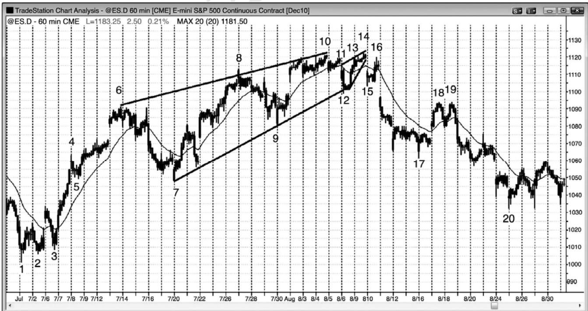
如图 5.1 所示，60 分钟电子迷你形成一个楔形反转顶，然后形成一个较小的楔形回撤，跌至一个更低高点或双重顶，随后是两条腿下跌，至棒20结束。
楔形不必拥有完美的外形便会有效。举例说明，从棒 6 高点到棒 10 高点的趋势通道线是最佳拟合线，棒 8 二次上推超越了那条线。在市场从棒 10 到棒 12 向下反转后，形成一个楔形空头旗形，也拥有一个不完美的外形。三次上推是当日开盘棒 11 高点，然后是棒 13 和 14。该高点略低于棒 10 高点。无论你把它叫做双重顶还是更低高点，都没有关系。重要的是你看到大型的三次上推和随后的向下反转。
这也是一轮尖峰和通道多头趋势，其中有一个截止棒 4 的迅猛的上涨尖峰，然后是截止棒 6 的陡峭通道。从棒 3 低点到棒 6 的运动处于一条如此紧凑的通道内，以至于它成为一个大型尖峰。引出通道的棒 7 回撤被棒 20 抛盘测试。多头通道包含三推，外形呈楔形，那在尖峰和通道形态中比较常见。
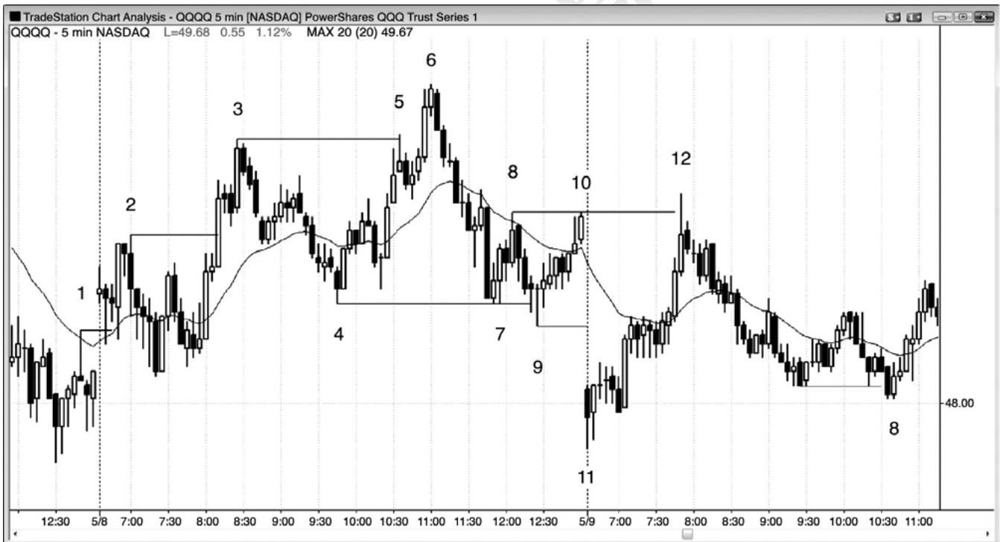
P100
如果三推运动太陡,那么它通常不是一个很好的反转形态,例外是有时在第一小时内它可能引起开盘反转。如图 5.2 所示，在棒 11 到棒 12 的三推形态中，市场强势上涨，虽然这是一条陡峭的通道，但它是一个可接受的抛物线形楔形开盘反转。棒 12 向上突破了棒 8 和棒10 双重顶，随后是一条空头内包棒。棒 12 既是对双重顶的失败突破，也与双重顶中的任一个形成一个双重顶。在反弹所至价位，卖家昨天多次入场，可以合理地认为他们今天还会在
从昨天开始的交易区间的顶部附近返回市场。
在交易区间市场中，在突破处做逆向交易是一种很好的策略。如果做空，就在区间顶部附近的失败的突破棒下方 1 个跳动处使用止损单入场，如果做多，就在区间底部附近的失败的突破棒上方 1 个跳动处使用止损单入场。对任意波段高点或低点的突破，即便它是先前趋势和反向趋势的一部分，那也是一种力量的象征，是一种潜在的交易架构。这两天有多个失败突破和反转的例子，包括失败的趋势线和失败的趋势通道线突破。
棒2、3和 6也代表着一个收缩台阶形态，这种形态常常引起不错的反转。你还可以称它为楔形，因为它包含三次上推（棒 2 和棒 3 是头两次上推，它也是从棒 4 开始的第三次上推）。对于收缩台阶形态，第二次突破小于第一次，显示出动能的损失。此处，棒3比棒2高出 19美分，但棒 6 只比棒 3 高出 23 美分。每当出现收缩台阶形态时，交易变得更可能成功，通常预示着强趋势中即将形成两条腿回撤。
棒 4 和棒 7 形成一个双重底，棒 9 是对那个底部的一个失败的向下突破。棒 4 和棒 7 是两次下推，棒9是第三次下推，所以是向上反转，是楔形底的一个变种。
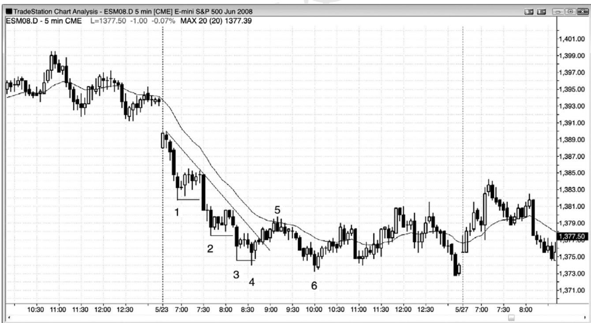
P101
如图 5.3 所示，收缩台阶形态，每个突破延伸的幅度小于前一个，表明动能在衰退，逆势交易成功的几率在增加。在棒 4 台阶之后，截止棒 5 的运动突破了趋势线，形成了一个测试低点的台阶，很可能出现两条腿反弹（发生在棒6更低低点和双棒反转之后）。动能损失表明趋势正在变弱，双向性变强，增加了向交易区间转变的几率，比如在这里。
棒 3 到棒 5 形成一个小型楔形空头旗形。第一次上推之后紧跟着棒 4 更低低点，那是一种常见的楔形变种。截止棒 5 的上涨运动包含另两次小型上推。棒 4 是一个成功的最终旗形刮头皮架构，该形态增长为一个较大的最终旗形，结束于棒 5（一个楔形），那是一种常见现象。
第一次下推之后，市场回撤，然后形成一个强突破，此时不清楚是仅仅再出现两推，还是动能强到重启开始计数。举例说明，棒 3 是第三次下推呢，还是应该在截止棒 2 的强下跌运动重新开始计数呢？根据后见之明，答案一目了然，但当你正在交易时，你是不能确定的。下行动能越强，大部分交易者就越可能重新计数，就越可能形成第四推。截止棒 4 的第四次下推，实际上就是从截止棒 2 的下跌尖峰开始的楔形底中的第三次下推。
一旦棒 6 跌破楔形底棒 4，楔形底便告失败。应该把棒 6 看作同其他任何突破一样。紧接着是一条多头反转棒，形成一个失败的反转和一个失败的突破。有些交易者把这个买进架构看作一个更低低点重要趋势反转，而有些交易者把它看作一个更低低点回撤，即向上突破棒 4 楔形底后的回撤。它还是一个收缩台阶买进架构，是对交易区间的失败的向下突破。最后，它是一个小型最终旗形反转（棒 6 之前有一个双棒空头旗形）。所有这些都是交易者考虑在棒 6 后面的多头棒上方买进的合理理由。
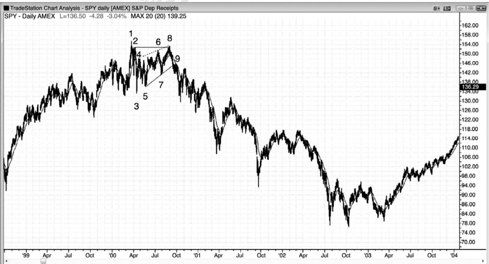
SPY日线在2000年3月见顶，然后是一波三推反弹，到达棒8更低高点，如图5.4所示。棒 8 还与棒 2 形成一个双重顶空头旗形（它略高于棒 2 高点）。棒 8 差一点就触及虚线表示的空头趋势通道线。这个楔形空头旗形之后是一轮大的多头趋势（译注：据图应为空头趋势）。在它形成时，不清楚是否会发生趋势反转，但是在截止棒 1 的三次上推之后，市场很可能至少形成两条下跌腿。截止棒 3 的下跌是第一次下推，于是截止棒 8 的反弹是回撤，使得抛盘至少再出现一条下跌腿。虽然大部分多头趋势之后的交易区间只是更高时间框架图表上的多头旗形，但是大部分趋势反转是从交易区间开始的。在改变方向之前，市场通常不得不转变为双向市场。当市场开始从棒 8 下跌时，更有可能在棒 3 低点附近找到支撑，棒 3 低点位于正在形成的交易区间的底部。然而，跌破棒 3 的腿形非常陡峭，显然没有多少买家，市场不得不继续下跌，以便找到愿意买进的交易者。在 2003 前初的双重底回撤和更高低点重要趋势反转之前，强势多头一直没有出现。
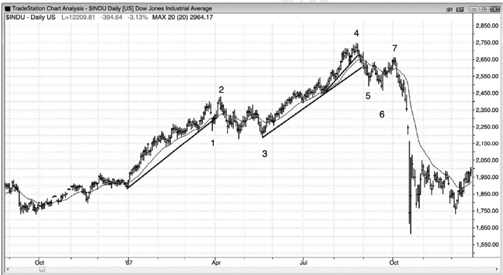
P102
在道琼斯工业平均指数的日线图中，一个楔形空头旗形更低高点形成于市场跌破引出1987 年崩盘的多头趋势线之后，如图 5.5 所示。截止棒 6 的下跌很强，大幅跌破趋势线和均线。有些交易者把该楔形空头旗形的第一次上推看做棒 5 之后的反弹，第二次和第三次上推看做截止棒 7 的三次上推中的任意两个。有些人把棒 7 看做一个两条腿更低高点重要趋势反转，所以是一个低点 2 做空架构，第一条上涨腿是棒 5 后面的反弹。还有人把截止棒 7 的三次小型上推看做一条小型通道，跟在从棒 6 开始的小型上涨尖峰之后。大部分交易者看到所有这些因素，给每一个因素赋以不同的权重。
棒 1 是一个楔形多头旗形的第一次下推。又出现两次下推和一个小型突破，接下来是一个更高低点突破回撤，至棒 3 结束。有些交易者把棒 3 看作一个双重底多头旗形，即与楔形多头旗形的底部形成一个双重底。很多楔形多头旗形都是失败的头肩顶，比如此处。
棒 1 抛盘之前的上涨运动包含四次上推，说明了仅仅三推并不能提供一个反转架构。当三推处于紧凑的多头通道内时，更有可能出现第四推和第五推，而不是反转。截止棒 4 的上涨通道在最后阶段形成三推，也是位于一条紧凑的多头通道内。当通道紧凑时，空头不应在三次上推后的向下反转做空。他们应该等待，看空头突破到底有多强
棒 1 是一个强空头尖峰，很多交易者在棒 2 处的更高高点做空，他们认为那是一个更高在市场测试多头高点，形成更高高点或更低高点时做空。
棒 5 突破了多头通道，显然也突破了多头趋势线，于是交易者们准备在突破回撤做空。棒 7 处形成一个更低高点，与棒 5 之后的小型反弹顶形成一个双重顶。多头趋势中的大部分交易区间变成多头旗形，只是更高时间框架图表上的回撤。虽然市场不必从棒 3 向上反转，但那是最有可能出现的结果，因为棒 3 位于多头趋势中交易区间的底部。市场可能从棒 2 之后形成的更低高点重要趋势反转继续下跌（形成一个双重顶空头旗形和更低高点），但是大部分重要趋势反转之后都是交易区间，而不是向反向趋势的反转。整个架构类似于棒 7 处的架构，棒 7 之后是一轮大的空头趋势。
图 5.6 刚好在趋势通道线处退缩的反转
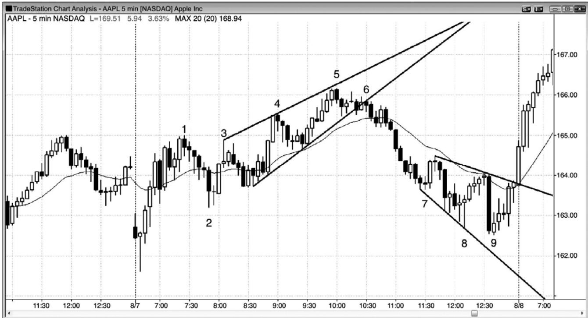
P103
当空头存在紧迫感时，他们将在略低于趋势通道线处积极做空。他们担心市场不会超越趋势通道线，不希望冒险错过下跌。图5.6中，棒3、4 和5形成一个楔形顶，但是棒5没有过冲趋势通道线。因为这是一个楔形反转架构，所以最好等待二次信号，比如一个更低高点。棒 5 和它后面一棒形成一个小型空头尖峰。棒 6 是一个二次入场，是一个失败的高点 2，棒 6一个较大的三棒空头尖峰的起点。在单棒回撤之后，形成一个五棒空头尖峰，暴跌进入一轮强空头趋势。由于从棒 2 开始的上升通道包含大型波段，因此包含很多双向交易，这个尖峰和通道多头形成不是一轮强趋势。尖峰是当日低点至棒 1。当出现明显的交易区间行为时，激进型交易者会在首次入场做空，即棒 5 处的双棒反转。顺便提一句，楔形顶处的棒 1 高点是一个微型楔形顶，截止棒 2 的抛盘与楔形底形成一个双重底多头旗形，即楔形通道的起点。棒 2 还是对向上突破当天第一棒的一个测试。
棒 7、8 和 9 形成一个三推多头架构，入场在棒 9 多头反转棒上方，尽管收盘只有中等高度。当天显然不是一个趋势日，所以较弱的反转棒也是合理的。该形态拥有发散的轨线，不过它不是一个扩张三角形，因为棒 8 后面的高点低于棒 7 后面的高点。棒 9 没有过冲趋势通道线，但它仍然是交易区间日中一个很好的做多架构。如果你因为它形成于截止棒 7 的强下跌之后而感到担心，那么你可以在做多前等待一个更高低点。两棒之后的外包上涨棒是一个更高低点，但是当在外包棒入场时，你必须迅速做出决定，因为它们常常快速反转。
棒 9 前一棒是一条大型空头趋势棒，因此是一次突破尝试。但是，下一棒没有坚持到底卖出。相反地，它是一条小型多头棒，因此是一个失败突破买进架构。虽然它跌破了棒 8 低点，但是它前面的反弹包含五个或六个连续的多头实体，因此是一个强度适中的多头突破尝试。抛盘只是多头突破后的一波短暂而迅速的回撤。突破回撤有时形成一个更低低点，比如此处。永远不要被一条大型空头趋势棒所吓倒。总要把每条趋势棒看作一个突破，而且要知道大部分突破尝试失败。
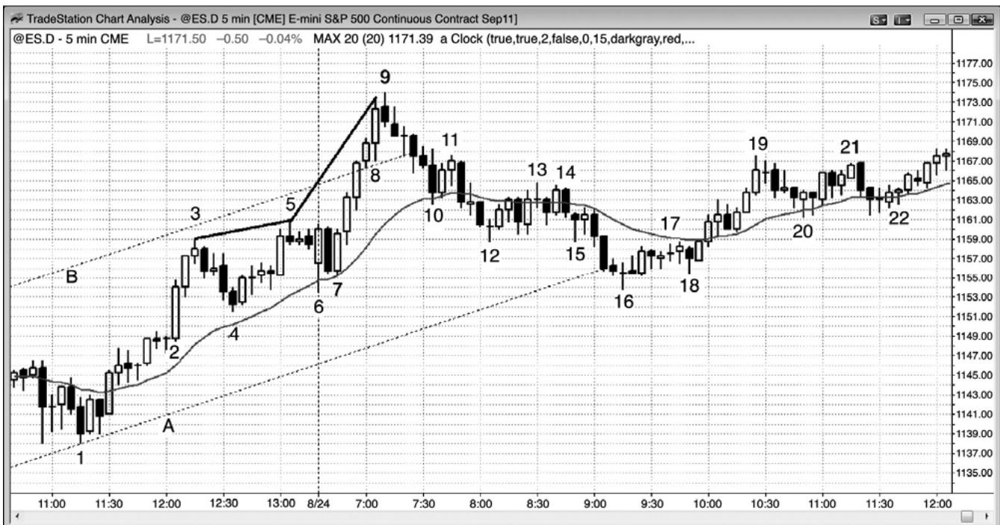
P104
如图 5.7 所示，电子迷你从棒 5 更高高点向下反转，形成一段交易区间，但是，市场从该区间向上强势突破而出，超过了多头通道顶部的线 B。记住，每个反转只是对某个价位的失败突破。然后在棒 9 向下反转，棒 9 之前是第三次上推。楔形的斜率增加，呈抛物线形（从棒5到棒9的趋势通道线的斜率，比从棒 3到棒5的趋势通道线的斜率要大）。就像任意楔形顶一样，很可能形成两次下推。
截止棒 9 的强势反弹向上突破了多头通道（虚线），但是，接下来便在截止棒 10 的下跌中返回通道内部。每当市场向上突破多头通道，然后又强势回转到通道之内时，大约有 50%的可能性空头波段将会继续，并且向下突破多头通道的底部，比如此处。当突破即将失败时，它通常会在向上突破通道后的五棒之内失败，比如此处。空头买回他们的空头头寸，激进型多头在棒 16 附近做多，棒 16 与当日低点棒 6 形成一个双重底，而且是到达目标（向下刺穿通道）后的第一次反转。
棒 8 前一棒的实体比棒 8 前面倒数第二棒的实体小，意味着动能正在衰退。棒 8 拥有一个较大的实体。这意味着什么呢？这意味着棒 8 是在趋势暂停后尝试令趋势再次加速。很多交易者对棒 8 较大波幅的解释是，它是两条腿回撤前显现出的高潮行为，暂停或许是反弹中的最终旗形。交易者们在棒 8 收盘及其高点上方卖出，特别是在棒 9 收盘及其低点下方，因为空头收盘表明卖家正变得越来越强。多头卖出自己的多头头寸获利了结，有些空头入场刮头皮交易，预期在小型买进高潮（小型最终旗形）之后形成一波较大幅度（可能持续 5 到 10棒）的回撤。有些空头根据抛物线楔形做空头波段交易。
棒 16 是第二条下跌腿的底部，棒 8（译注：是否应该是棒 12）是第一条下跌腿的底部。在较高时间框架图表上，这可能是一个明显的高点 2 回撤。它还是对当日低点的一个双重底测试，当日低点形成于棒 6。空头正希望形成一个反转日，但是多头介入，战胜了空头。收盘前的反弹测试了结束于棒 9 的非常强的多头尖峰的顶部。虽然那一波反弹不强，而且截止日。
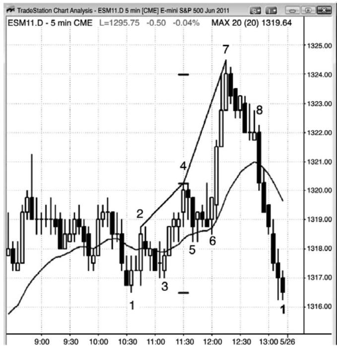
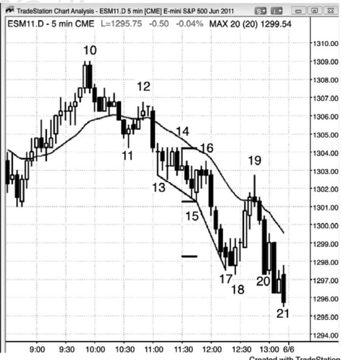
P105
如图 5.8 所示，左侧图表处于交易区间内，在棒 4 下方触发一个低点 2 做空架构。大部分交易者不会在这个疲弱的架构做空，因为棒 4 是一条十字星棒，之前连续六棒没有空头实体。棒 6 形成一个高点 2 买进架构（也是棒 5 之后高点 1 和失败的低点 2 之后的一个突破回撤买进架构），它引起一个强多头突破。反弹总是会到达某个阻力区，比如测量运动目标或趋势线，在那里，交易者们会部分或全部获利了结，激进型空头将会做空头刮头皮。这一波反弹过冲了一个测量运动目标几个跳动，但是在该区域可能同时存在其他目标。多头和空头都只预期出现回撤，双方都计划在回撤结束时买进（那总是在某个支撑位，可能并不明显）。运动在目标处结束的原因是大部分交易都是由计算机完成的，它们的算法都是基于数学和逻辑。它们只在支撑位买进，在阻力位卖出。经验丰富的交易者通常都能看到这些潜在价位。
从棒 4 到棒 7 的趋势通道线比从棒 2 到棒 4 的趋势通道线陡峭，也就是说那波上涨是抛物线形的。棒 7 前一棒有一条很长的尾线，这通常意味着在那一棒收盘买进的交易者正在寻找一波刮头皮上涨，然后是一波回撤。棒 7 高点是第二波上涨。下一棒是一条空头内包棒，是做空的信号棒。由于棒 4 处失败的低点 2 之后市场表现出的力量很强，所以大部分交易者正确地假定将出现第二次上推，60%以上的情况下都会出现第二次上推。在多头旗形（这里是一条空头微型通道）中，市场回撤 6 棒，但是没有向上突破，而是在棒 8 后一棒向下突破。于是，这个多头旗形是反弹的最终旗形，它的向下突破是一个最终旗形反转，尽管该旗形从未向上突破。敏锐的交易者们注意到这种可能性，在棒 7 后面的空头棒下方做空，在向下突破棒 8 时做空。选择第一个入场的交易者知道，他们只有 40%的胜率，但是他们正在寻找一个向下反转，回撤至少是风险的两倍，因此拥有一个正的交易者方程。在向下突破做空的交易者，或者在那一棒形成时做空，或者在它的收盘做空，或者在随后任意一棒的收盘做空，已经看到市场正在下跌的证据，因此他们的空头交易最低有 60%的胜率（对于他们而言，他们希望回报至少与风险一般大）。经过权衡，他们以较小的利润换取较高的胜率，他们的交易者方程也是正的。
右侧图表是一个抛物线楔形底。棒 15 是双重底处一条强多头反转棒，是一个买进架构，预期市场在向下突破棒 14 的低点 2 最终旗形之后向上反转。可以把棒 14 看作一个二次入场低点 2 做空架构，也可以看作前一棒触发的低点 2 做空架构之后的突破回撤，或者看作一个三角形做空架构（三次上推分别是棒 13 之后第二棒的十字星的高点，随后的多头内包棒，以及棒 14 的顶部）。空头把棒 16 看作是空头三角形被突破后的一波回撤。多头和空头都在棒16、其 15 后面的多头入场棒、以及棒 15 买进信号棒下方卖出。多头正在退出他们的多头头寸，空头正在新建空头头寸。当多头在一个从双重底开始的多头反转被止损踢出时，他们常常预期形成突破和测量运动，至少几棒之内不准备再次买进。这使得市场快速下跌。
棒 17 有一条下尾线，这提醒交易者们，在形成回撤之前，市场可能只会再下推一次。同时，它的收盘位于中点，那使得它成为一条反转棒，不过较弱。这是尖峰（一条微型通道）之后第一次尝试向上反转，而第一次反转尝试通常失败。棒 17 上方的卖家多于买家，不出所料。刮头皮者们在棒17收盘做空，希望在回撤开始前再形成一次小型下推。因为很可能只出现小幅下跌，所以在下一棒下方的低点1 做空是非常冒险的。在棒18处的一个小型双重底（棒17是第一次下推）中，市场向上反转。棒 18低点比棒17收盘低了4个跳动，所以在那一棒收盘入场的空头大多被套，在棒 18 上方买回他们的空头头寸。棒 18 拥有一个强多头实体，大部分交易者预期市场向上反转后将到达均线附近，可能到达棒 15 高点。棒 15 是一个合理的买进信号，所以有些多头随着市场下跌而逐步加仓，计划在首次入场点（即棒15高点）退出各个头寸。多头认为反弹将到达棒 16 或 14 高点。棒 18 低点位于一个或多个支撑位，不过这里没有给出。
P106
截止棒 18 的下跌越过一个合理的测量运动目标，意味着计算机们正在观察另外的某个价位。大部分测量运动目标不会引起反转，但是画出它们仍然是有帮助的，因为所有反转都发生于支撑和阻力位。当反转发生于这些价位中的某一个，而且该价位特别明显时，对于趋势型交易者，它是一个获利了结的不错位置，对于逆势型交易者，它是一个入场反转交易的合理位置。当天最后一个低点也位于一个支撑位，无论它是否明显。棒 21 低点比当天前一低点低 1 个跳动，棒 21 收盘价刚好位于当日开盘价。
因为那波上涨是一个抛物线形反转，所以有 60%的可能至少形成两条上涨腿，并且持续10棒。也就是说有40%的可能不到达那些目标。
由于棒18是一个强度适中的买进信号，所以大部分交易者在它的高点上方入场。于是剩下较少交易者在市场上涨时买进。棒 18 顶部的尾线和随后的十字星棒表明市场中的多头缺乏紧迫感，也就是说该买进架构并不像应该的那样的强。当多头未能表现出力量的征兆时，交易者们便会以较快的速度获利了结。棒 19 超越棒 18 高点 14 个跳动，形成一个空头收盘。这就意味着很多多头刚好在达到 3 点利润时获利了结。市场在上涨时没有找到新的买家，而是在均线处和棒 13 后面第二棒触发的低点 2 做空架构下方两个跳动处找到了获利了结者。空头把这看作一个突破测试，错过盈亏平衡止损 1 个跳动，因此表明空头正在积极保护他们的止损。在回撤至一个更高低点之后，虽然几率仍然偏向于形成第二条上涨腿，但是大部分多头在棒 19 形成期间和棒 19 下方退出他们的多头，并且仅准备在回撤中的棒线高点上方使用止损单再次买进。更高低点从未形成，市场跌破棒 17 空头尖峰低点，收盘于当日低点。多头获得的利润没有入场时希望的那样多，但是这种情况时有发生，不足为奇。当交易者们入场时，他们总有一套计划，但是如果之前的预测失败，他们就会改变自己的计划。很多交易者所得利润比入场时预期的要少，甚至亏损。优秀的交易者只是接受市场给他们的利润，然后便转
向下一笔交易。
对于收盘前可能出现的下跌，交易者们格外谨慎，因为在上涨了两年之后，市场在日线图上形成一个空头突破。当市场可能在日线图上正向下反转时，很多交易者寻找收盘前的下跌（就像他们在多头趋势中寻找收盘前的上涨一样）。这使得交易者们在市场跌破棒 19 之后不愿使用限价单买进。他们非常谨慎，只希望在反转棒形成后买进。在一个空头日，由于当市场下跌进入收盘前只有非常少的交易者愿意使用限价单买进，所以更高低点信号棒一直没有形成。
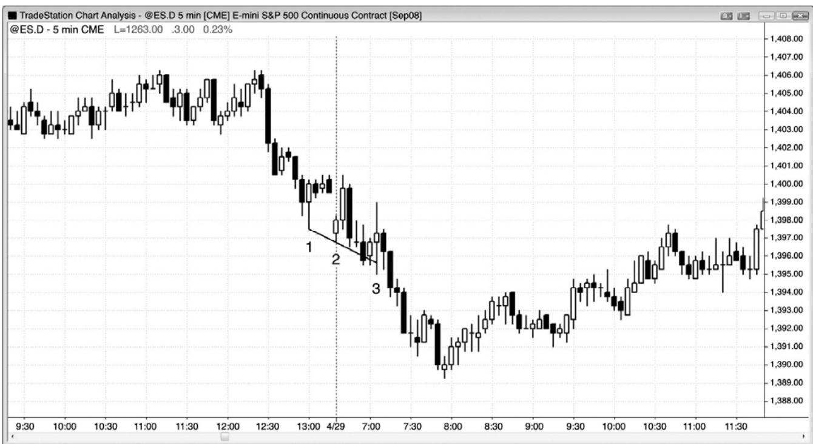
当形成一个底部架构时，如果市场横盘而不是上涨，那么市场正在接受更低的价格，而不是拒绝它们，因此，市场可能是处于一波运动的中间，而不是底部。失败的楔形常常会形成一波向下的测量运动。
如图 5.9 所示，市场试图形成一个楔形反转，但是棒 3 是第四条几乎与前一棒重合的棒线。这是对更低价格的接受而不是拒绝，所以很可能不会向上反转。另外，下降通道非常陡峭，在这种情况下，在做多前等待一个更高低点通常较为安全。棒 3 入场棒是一条外包上涨棒，那些无视空头趋势通道线的陡峭，只看到三推的多头们被套。耐心的交易者们不会在这个楔形买进，因为没有形成更高低点。
当楔形失败时，通常会形成一波近似于楔形高度的测量运动。此外，棒 3 之下的运动幅度，约等于棒1之后的楔形顶部至棒3低点处的底部的距离。
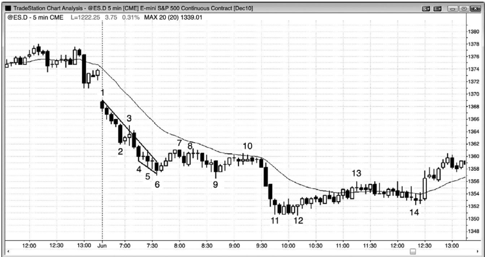
空头趋势中，如果楔形底处于紧凑通道内，而且多头先前没有显示出力量，那么它不是一个买进架构。如图 5.10 所示，市场开盘向下跳空，形成一轮空头趋势。过于心急的多头会在棒 6 楔形反转买进，认为那是一波两条腿下跌运动的终点，而且棒 3 处形成一个趋势线突破。不过，棒 3 是一个失败的趋势线突破，并不代表着多头以任何动能控制市场。内包棒上方的棒 6 楔形做多入场，可以做一笔成功的刮头皮交易，但很可能不是一个能够转化为波段交易的架构。截止棒 6 的下跌过程中，并未出现有意义的趋势线突破或上行动能，所以更像是一条下跌腿，由两条处于紧凑空头通道内的小型腿构成。在突破空头趋势线后，很可能出现第二条下跌腿。有些交易者把棒 6 看作一个楔形的终点，第一次下推是棒 2，第二次下推是棒 4，最后一次下推是棒 6。它也是一个五棒微型楔形，由棒 4、5 和 6 构成。由于趋势通道线可以通过棒线底部绘制，所以这个小型形态可以看作一个小楔形，所以其行为应该像一个楔形，其后应该有一波调整，大约到达形成第一次下推的那一棒的顶部，即楔形起点。
然后在棒 8 形成一个低点 2 做空架构。这一波小型反弹没有突破趋势线，所以买家们可能会利用失败的新低（发生于棒 9）做一笔多头刮头皮交易。不过，在没有强多头反转棒的情况下，这个做多架构很可能失败，实际上它在棒 10 低点 2 做空架构失败，然后市场向下突破，进入第二条空头腿，在棒 12 最终旗形单跳动假突破结束。棒 10 做空架构与棒 8 形成一个双重顶，也是一个 20 缺口棒做空架构，结果空头趋势恢复，跌至当日低点。
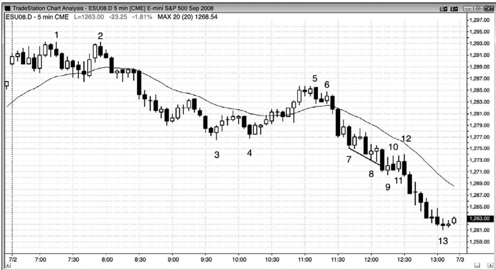
P108
当楔形底处于紧凑的空头通道内时，它不是一个买进信号。如图 5.11 所示，棒 9 是一个空头趋势通道线过冲反转和一次下推（一个下推）。然而，因为它是在一条紧凑的空头通道内，与前一棒重叠太多，而且收盘很弱（小型多头实体），所以它不是一条强多头信号棒。对于过度的卖出没有明确的抗拒，而且你永远不应在首次尝试突破紧凑空头通道时买进，因为大部分首次突破在完成一波刮头皮运动前都会失败。最佳选择，在买进前等待二次入场。在空头通道内，强势交易者们会在前一棒高点及其上方做空，而且他们不打算买进。
对于在楔形买进的任意一位交易者，棒 10 都是一个单棒失败。它是第三条横盘棒，所以聪明的交易者们现在看到一段空头趋势中的交易区间，那通常是一种延续形态。重叠棒意味着市场正在接受这些更低的价格，而不是拒绝它们。在空头趋势中，买进之前需要看到拒绝下跌的征兆。认为市场已经过度，即将调整，据此交易是一种失败的策略。趋势延续的时间比大部分交易者所想像的要长得多。
交易者可能会在棒 11 处的低点 1 做空，但这是一段交易区间，在没有较强多头陷阱的情况下，聪明的交易者们不会在它的低点做空。它是第二个单棒失败突破。另外，楔形通常会两次尝试反弹（两条上涨腿），所以他们仅会在楔形失败（即跌破棒 9 低点），或者二次尝试反弹失败的情况下做空。
棒 12 是连续出现的第三个单棒失败突破，但这一次它前面是两条上涨腿（棒 9 和棒 11），所以是一个低点 2 做空架构。这是聪明的交易者们可能选择的第一笔交易，因为它是空头旗形中的一个低点 2。由于此前市场两次尝试向上反转（棒 10 和棒 12）均告失败，所以使得这个架构特别好。它们代表着从楔形开始的两条上涨腿，显然较弱。另外，极少一连出现三个单跳动失败，所以接下来很可能形成较大幅度的运动。
交易者还可能等待在棒 9 低点下方做空，因为仅当那时该楔形才明确地失败。突破处异常放大的成交量（1 分钟图上 14,000 张合约），验证了很多聪明交易者等到那一点才做空。失败的楔形底常常引出一波向下的测量运动，比如此处。
为了买进，你首先需要一个趋势线突破，而且它最好有一条反转棒。由于棒 9 是一条疲弱的反转棒，而且你更倾向于在趋势通道线突破和反转后买进，所以你可能会等待一个二次做多入场。棒 12 是一个二次入场，它那是在一段四棒交易区间的顶部买进，而你决不应该在空头趋势中的空头旗形上方买进。一旦那个疲弱的二次入场失败，空头便控制市场。你需要选择那笔交易，而不是花费大量精力来说服自己做多架构已经足够好。
交易者们已经认识到，棒 2 处的双重顶被突破后不久，这一天便形成一个趋势型交易区间日。在这种类型的空头趋势日，在两个方向交易通常是安全的，但做多是逆势交易，所以做多架构必须很强，比如棒 3 和棒 4 后面第二棒（二次入场做多）。截止棒 7 的下跌是一个突破，但是没有形成第三段交易区间，而是形成一条紧凑的空头通道，然后再次向下突破。从截止棒 7 的下跌尖峰开始，市场形成一条下降空头通道。有些交易者把从棒 2 到棒 3 的运动看作尖峰，把从棒 5 开始的运动看作通道。但那都没有关系，只要你辨识出当天是一轮空头
顺便提一句，棒 2 之前形成波段低点的三条十字星棒构成一个微型楔形。
图 5.12 连续的单棒突破
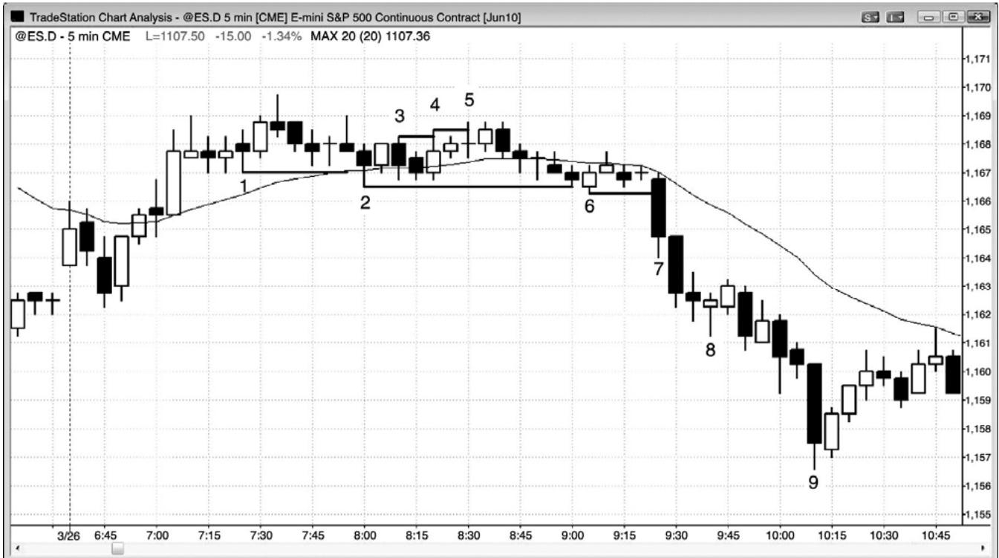
P109
单棒突破可能非常重要，特别是形成两个连续的单棒突破，因为那将构成一个三推形态。图 5.12 中，棒 4 超越棒 3 一个跳动，棒 5 超越棒 4 一个跳动。如果接下来出现一波回撤或一些横盘交易，然后市场向上超越棒 5，那么很可能向上突破，该微型楔形可能不会令市场反转。
棒 2 比棒 1 低一两个跳动，棒 6 比棒 2 低一个跳动。几棒之后，棒 7 跌破棒 6 低点，向上突破。当市场突破这些微型三推形态时，通常至少形成一波测量运动，使用交易区间顶部到底部的距离作为测量基准。这里，突破进一步向下伸展。
棒 8 是一个微型楔形底，形成一个单棒空头旗形。那表明市场正在暂停；它不是强空头趋势中的一个反转形态。
P110